赌神觉醒
第一章 · 牌桌上的程序员
当一个程序员坐上赌桌
他看到的不是牌
是概率、是模式、是——
破解系统的后门
他看到的不是牌
是概率、是模式、是——
破解系统的后门
创业第三年，公司账上还剩47万。
按现在的烧钱速度，最多撑三个月。
我盯着屏幕上的财务报表，数字红得像是在报警。
三年前我辞了大厂的工作，拿着所有积蓄出来创业。
现在回头看，那个决定到底是勇敢还是蠢？
（大概两者都有吧）
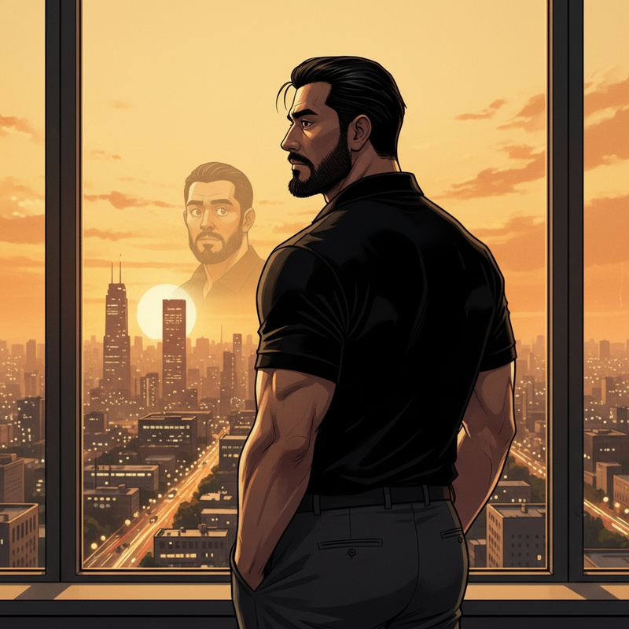
站在窗边看着这座城市，想起三年前意气风发的自己。
那时候觉得技术能改变世界。
现在发现，技术连房租都快改变不了了。
手机响了。老陈——我大学室友，现在在金融圈混。
老陈"今晚有个局，来不来？赢了够你烧半年。"
我本能地想拒绝。但"半年"两个字像钩子一样勾住了我。
我"什么局？"
老陈"德州。私人的。放心，都是正经生意人。"
"正经生意人"这个词从老陈嘴里说出来，可信度约等于零。
（但我的账户余额也约等于零了）
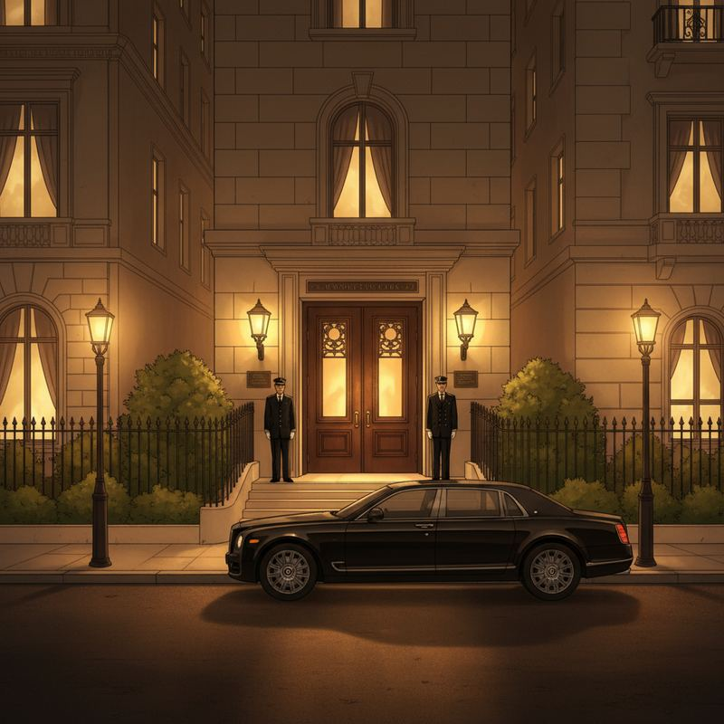
晚上九点，东三环某高端私人会所。
门口停着的车加起来能买我整个公司。
嗯，大概能买三个。
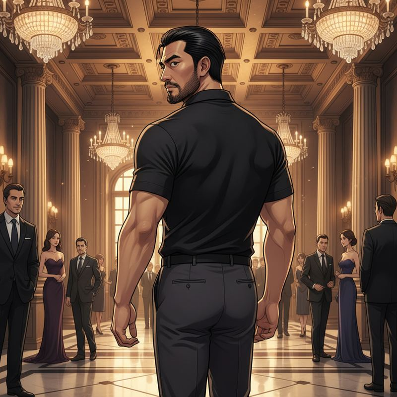
推开门的瞬间，暖光和雪茄味扑面而来。
满屋子西装革履，就我一个穿Polo衫的。
我感觉自己像个bug混进了生产环境。
（还是那种随时会被catch的RuntimeException）
老陈"来了来了！这是我跟你们说的那个技术天才。"
技术天才？老陈你能不能靠谱一次？
我"别这么介绍我，压力很大。"
老陈"放轻松，就当玩儿。"
带着47万身家来"玩儿"，我心态能好才怪。
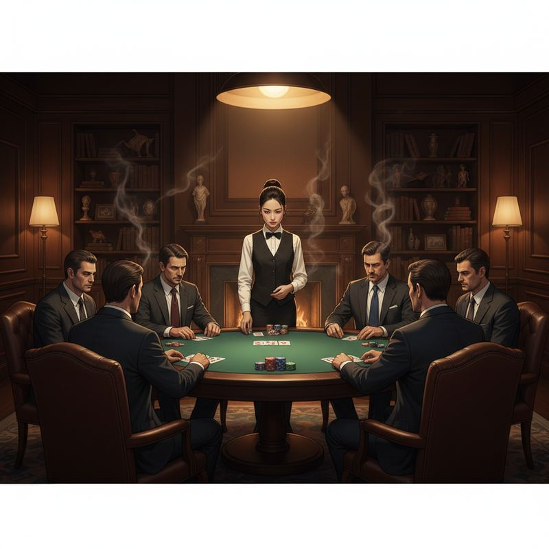
八角桌，绿色桌布，六个位置。
头顶一盏暖光灯把桌面照得亮堂，周围反而暗沉沉的。
像个舞台。每个人都是演员。
而我连台词都没背。
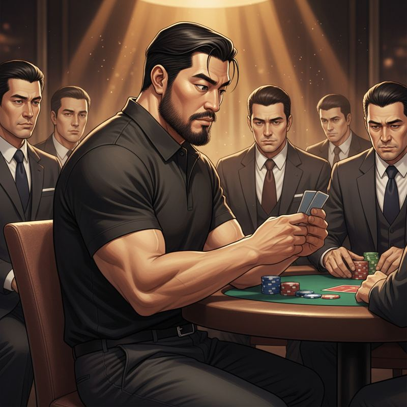
第一手牌发下来。我掀起一角——
A♠ 10♠。同花连牌。
不算顶级，但翻牌后潜力巨大。
胜率估算：约22%（6人桌）→ 若翻牌命中同花/顺子听牌 → 隐含赔率可观
等等……我在干什么？我的大脑居然在自动计算概率？
不对……这种感觉我认识。
这和我debug的时候一模一样——
观察输入，分析模式，预测输出。
程序员的大脑 = 天然的概率计算器
原来赌桌就是一个分布式系统，每个人的下注就是他们的API返回值。
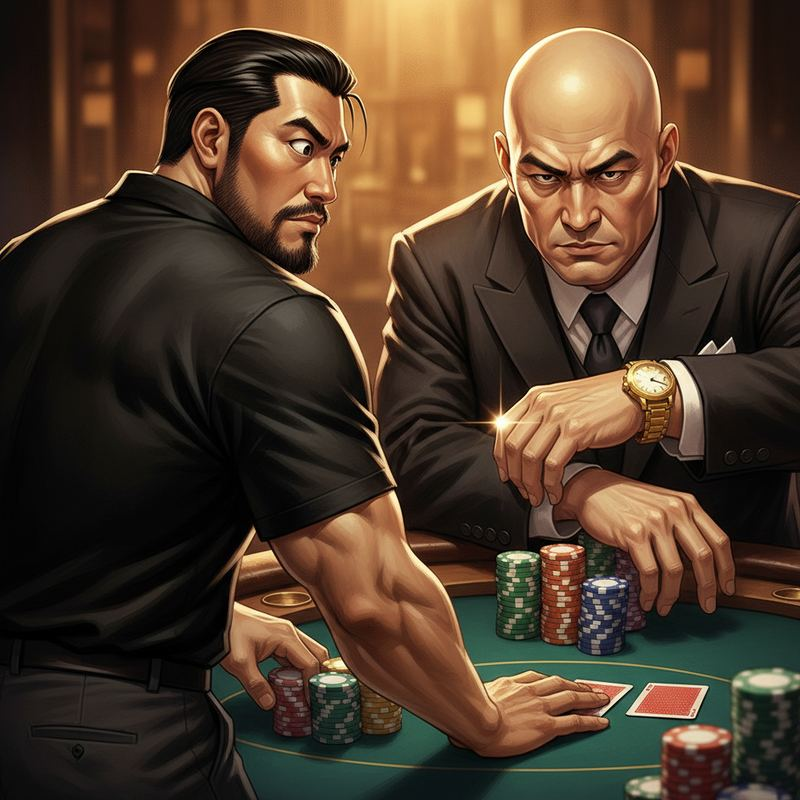
对面坐着的是今晚的主角——大家叫他"周总"。
秃头，金表，目光如刀。
光看气场就知道这不是善茬。
周总直接加注——是底池的三倍。
其他四个人安静地弃牌。
行，就剩我和这条鲨鱼了。
◆ 决策点 ◆
A · 跟注试探
谨慎观察。先收集数据，看看这条鲨鱼的下注模式。
谨慎观察。先收集数据，看看这条鲨鱼的下注模式。
B · 反加注挑衅
用气势打破节奏。让他知道新来的不是软柿子。
用气势打破节奏。让他知道新来的不是软柿子。
C · 弃牌等待
保守策略。等拿到坚果牌再出手。
保守策略。等拿到坚果牌再出手。
▶ 我选了A
先收集数据再行动——这是程序员的本能。你不会在没搞懂系统架构的时候就开始改代码。
先收集数据再行动——这是程序员的本能。你不会在没搞懂系统架构的时候就开始改代码。
🧠 内心独白
第一手就莽？那是赌徒。我不是赌徒，我是工程师。工程师的第一步永远是——侦查。
我平静地推出筹码。"跟。"
不是因为牌好。而是因为我需要看他的数据——下注频率、加注幅度、决策延迟。
样本量=1，不够。至少需要3手牌才能建模。
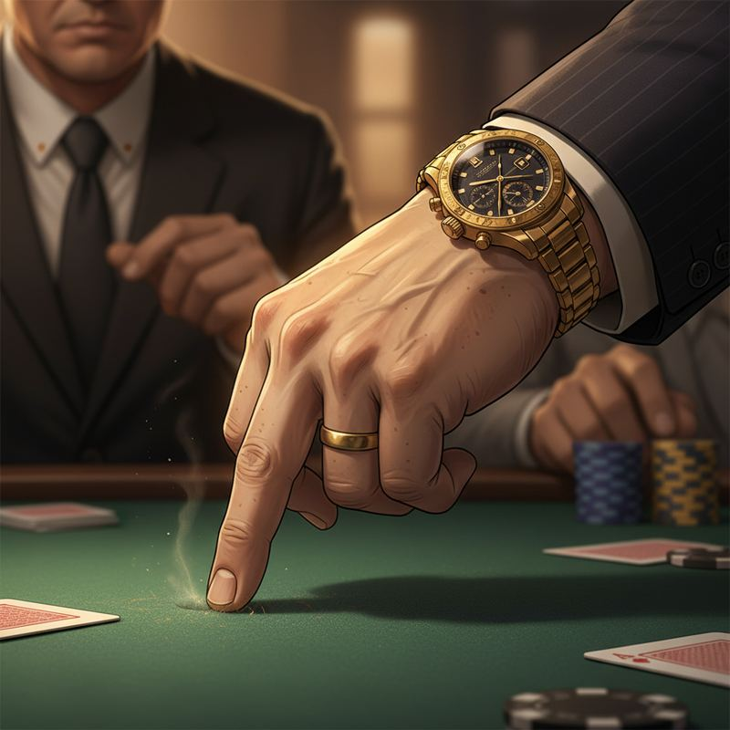
三手牌过后，我发现了一个细节——
周总每次加注的时候，右手无名指会轻轻敲桌面。一下、两下。
但他持有强牌时，手指不动。
假说验证：敲桌面=虚张声势（2/2命中率）。不敲=真货。
嘴角不自觉地翘了起来。
这种感觉……就像找到了程序的后门。
你以为自己的系统固若金汤，但你的无名指出卖了你，周总。
（搞安全的都知道：最大的漏洞永远是人）
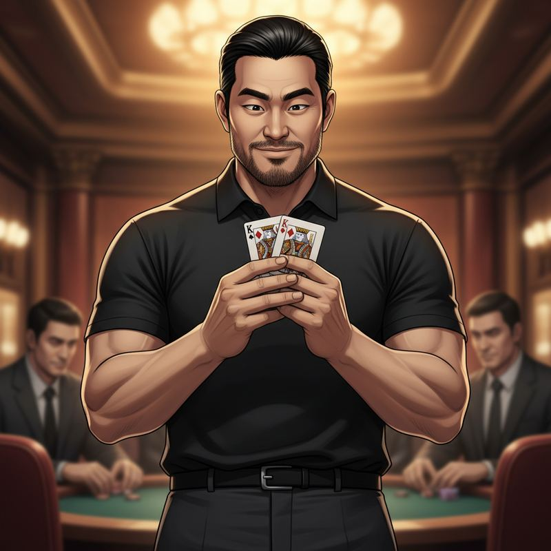
第七手。我掀开底牌——
K♥ K♦。口袋对K。
心跳加速。但脸上一点表情都没有。
三年创业练出来的最大技能不是写代码，是面对投资人时的扑克脸。
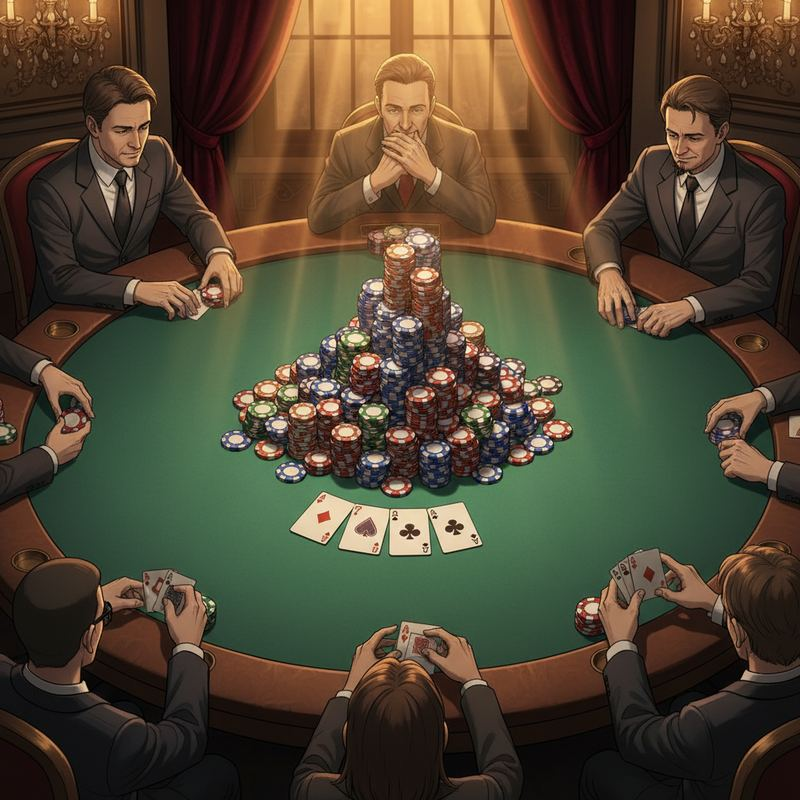
翻牌：K♠ 7♣ 2♦。
三条K。当前赢率：>95%
呼吸平稳。手心微微出汗。但外表——纹丝不动。
周总直接下注，是底池的一半。
他的无名指——没有敲桌面。
有意思。他觉得自己牌很好。
推测：周总持有两对或一对K以下的对子。三条K碾压他。
◆ 决策点 ◆
A · 慢打（Slow Play）
假装弱势，只跟不加。引诱鲨鱼继续加注，直到他all in。
假装弱势，只跟不加。引诱鲨鱼继续加注，直到他all in。
B · 直接下重注
数学告诉我稳赢。不玩心理战，直接拿走这个底池。
数学告诉我稳赢。不玩心理战，直接拿走这个底池。
C · 跟注控制
虽然大概率赢，但不确定对方底牌。稳妥跟注，不加注。
虽然大概率赢，但不确定对方底牌。稳妥跟注，不加注。
▶ 我选了A
信息不对称是最大的武器。他不知道我有三条K——那就让他继续往坑里跳。
信息不对称是最大的武器。他不知道我有三条K——那就让他继续往坑里跳。
🧠 内心独白
创业教会我的道理：当你握着王牌的时候，不要急着亮底牌。等待，等对手自己走进你的圈套。菩萨心肠，霹雳手段。
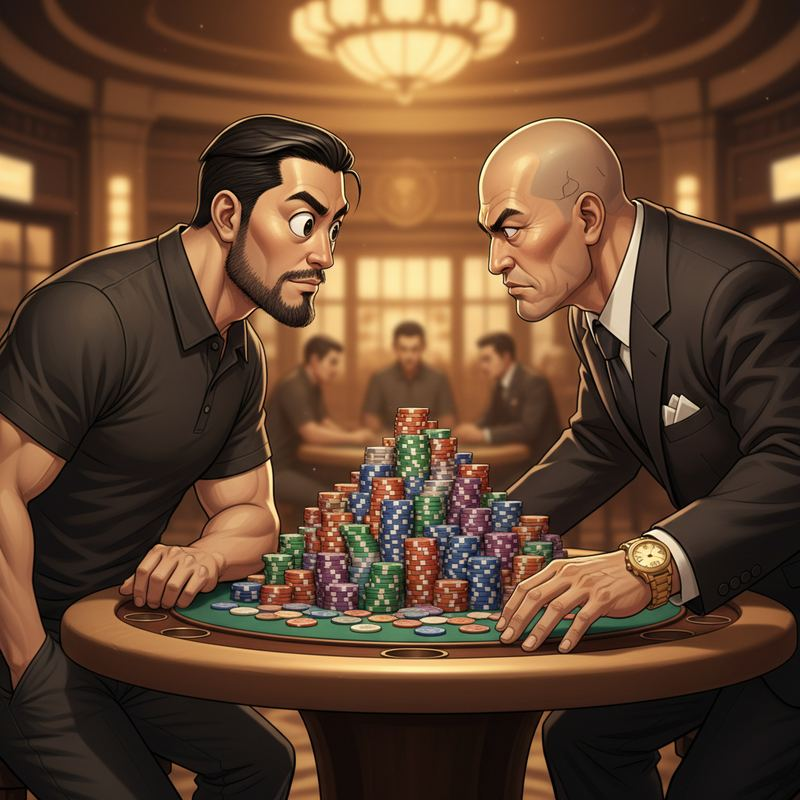
转牌。河牌。我只跟注，一次都没加。
周总越来越自信，筹码越推越大。
他以为我在苦苦支撑。
实际上我在等他一个字——
果然。
周总"All in。"
鱼上钩了。
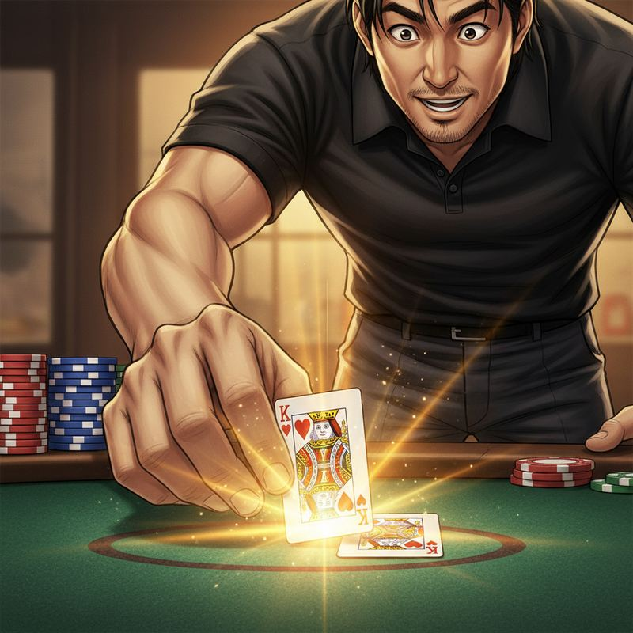
我平静地把筹码推到中间。
我"跟。"
翻开底牌。两张K，加上桌面的K。三条。
整桌安静了。
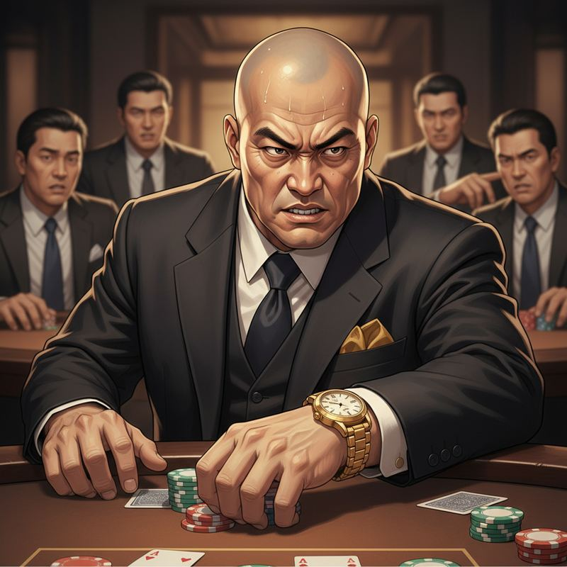
周总的脸色从自信变成铁青，大概用了0.3秒。
我"周总，这不是运气。"
我看着他的眼睛，微微一笑。
我"这是——概率。"
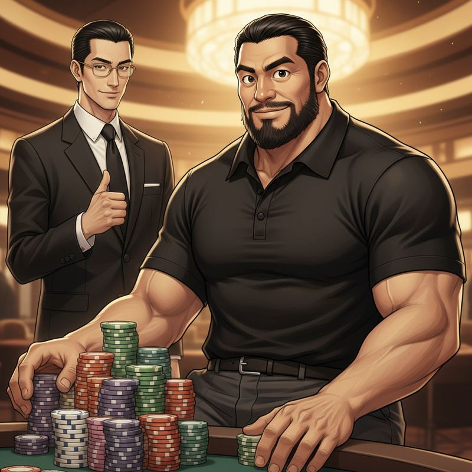
筹码哗啦啦地推到我面前。
赢了多少？我不敢算。
但应该够公司多活半年了。
（老陈在后面偷偷比了个大拇指，笑得像中了彩票的二舅）
起身要走的时候，荷官——那个全场唯一不笑的人——从身边经过。
她的嘴唇微微动了一下。声音很轻，轻到只有我能听见：
林小姐"你赢了钱。但你还不知道这个局的规则。"
什么？
我转头想问，她已经面无表情地回到了牌桌后面。
一股凉意从后背升起来。
"这个局的规则"？
德州扑克的规则我都知道啊……
还是说，她说的不是牌桌上的规则？
这个"局"——到底有多大？
出了会所，冷风吹来。
老陈一把拉住我的胳膊，脸上的嬉皮笑脸全没了。
老陈"兄弟，有件事我忘了告诉你——"
我"什么？"
老陈"鲨鱼的真实身份……他不是什么商人。"
◆ 决策点 ◆
A · 追问到底
"你到底拉我进了什么局？"——必须搞清楚。
"你到底拉我进了什么局？"——必须搞清楚。
B · 先不问
赢了钱，公司能活。其他的以后再说。
赢了钱，公司能活。其他的以后再说。
C · 回去找荷官
比起老陈的半句话，那个荷官似乎知道更多。
比起老陈的半句话，那个荷官似乎知道更多。
▶ 我选了A
我是程序员。信息缺失比bug更让我难受。你给我打开一半的窗口就别想让我关上。
我是程序员。信息缺失比bug更让我难受。你给我打开一半的窗口就别想让我关上。
🧠 内心独白
黑客的基因在血液里——我不能容忍不知道系统全貌。看到一个入口就必须探到底。哪怕那扇门后面是深渊。
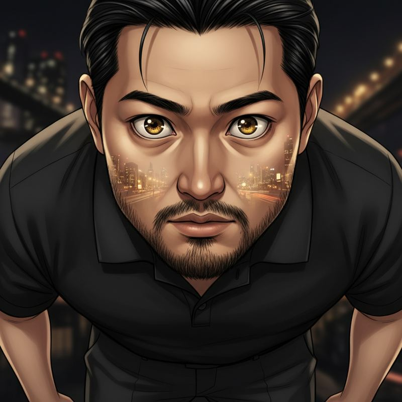
我"说清楚。他是谁。"
老陈深吸一口气，看了看四周，压低了声音——
老陈"他是……"
那天晚上我站在路边，看着这座城市的灯火。
口袋里多了一笔够公司活半年的钱。
但心里多了一个——不知道答案的问题。
我赢了牌桌上的牌。
但牌桌之外的那个"局"……我连规则都还没搞清楚。
第一章 · 完
"鲨鱼"周总不是商人。
荷官林小姐口中的"规则"。
我赢的不是钱——是入场券。
入的是什么场？
荷官林小姐口中的"规则"。
我赢的不是钱——是入场券。
入的是什么场？
[ 第二章 · 暗流 · 即将揭晓 ]
本场战绩：+48万
公司续命：3个月 → 9个月
危险指数：未知 ▓▓▓░░░░░░░